Modeling Rate Of Senescence#
Disclaimer from a reviewer: This report is formatted as github
README.mdfile (not jupyter book), so I recommend to read it on github by the following link to see a proper formatting.
This repository contains reproduction of the paper of Levine, M. E. (2012). Modeling the Rate of Senescence: Can Estimated Biological Age Predict Mortality More Accurately Than Chronological Age? The Journals of Gerontology Series A: Biological Sciences and Medical Sciences, 68(6), 667–674. doi:10.1093/gerona/gls233
Notes and modifications:
In the paper, NHANES III dataset (1988-1994) was used which is available by the link
In the original paper, variable “Cytomegalovirus optical density” was used, and this variable is not available in current version of NHANES III for all people (only for women) so I replaced it with variable CVP_IGG from “Antibody to Cytomegalovirus IgG and IgM” surplus dataset
In the original paper, 2006 Mortality Data was used which is archived and not available now so I used current version of 2019 Linked Mortality Files
Sections of the Jupyter Notebook ModelingRateOfSenescence.ipynb#
1. Reading NHANES III datafiles (lab.dat, exam.dat, adult.dat, cmv.xpt, NHANES_III_MORT_2019_PUBLIC.dat)#
Datafiles have specific format - each line of .dat file correspond to a participant, and in each line there is some sequence of numbers, blanks or repeating 8, 9 etc. In corresponding .sas files, there is description which variables correspond to which indices in the line. I collected all the indices of variables used in the article in this notebook section.
2. Data aggregation#
In this section all dataframes from .dat and .xpt are merged by SEQN variable (participant’s ID). Resulting dataframe is filtered by Age (30-75 y.o.), Pearson’s correlations between Chronological age and variables are calculated, 10 best variables are chosen. Rows containing NaNs are dropped.
Resulting dataframe was saved for reproducible results (data/df.csv).
Columns in the data/df.csv are:
Age and Event:
SEQN: participant’s ID
HSAGEIR: Age
HSSEX: Sex (1: Male, 2: Female)
MORTSTAT: Final status (0: Alive or censored, 1: Died)
PERMTH_EXM’: Time spent from examination to MORTSTAT Event
Biomarkers:
CRP: Serum C-reactive protein (mg/dL)
CEP: Serum creatinine (mg/dL)
GHP: Glycated hemoglobin: (%)
HAZMNK1R: Average K1 BP from household and MEC (systolic blood pressure)
AMP: Serum albumin (g/dL)
TCP: Serum cholesterol (mg/dL)
CVP_IGG: Cytomegalovirus optical density
APPSI: Serum alkaline phosphatase: SI (U/L)
SPPFEV05: Forced expiratory vol(FEV),.5 sec,max-ml
BUP: Serum blood urea nitrogen (mg/dL)
3. Analysis#
Tables 1, 2 are reproduced. Note that I have got slighly different number of participants and Pearson’s R values - I suppose the dataset was slighly modified from the time when article was published.
Original Table 1 |
Reproduced Table 1 |
|---|---|
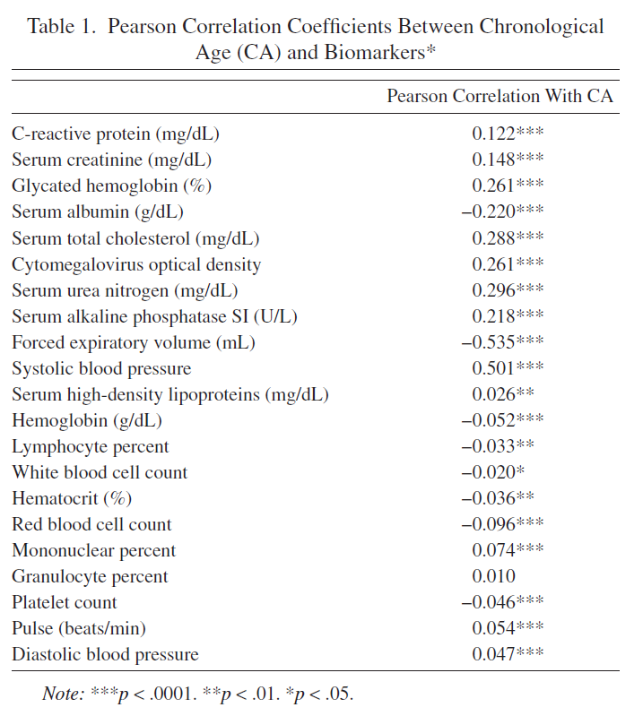 |
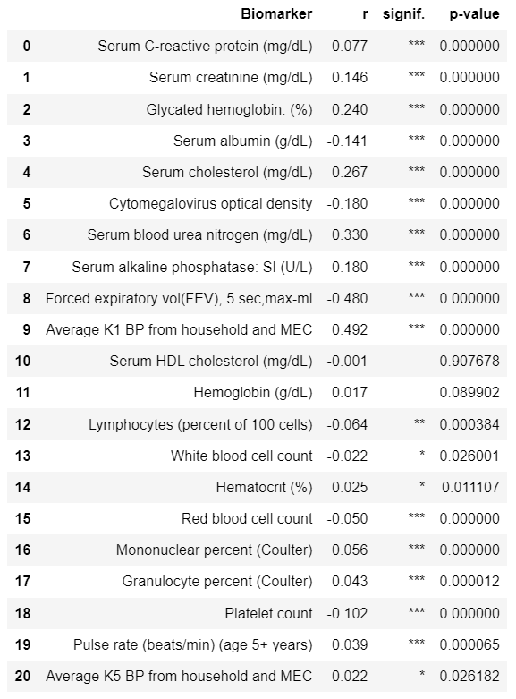 |
Original Table 2 |
Reproduced Table 2 |
|---|---|
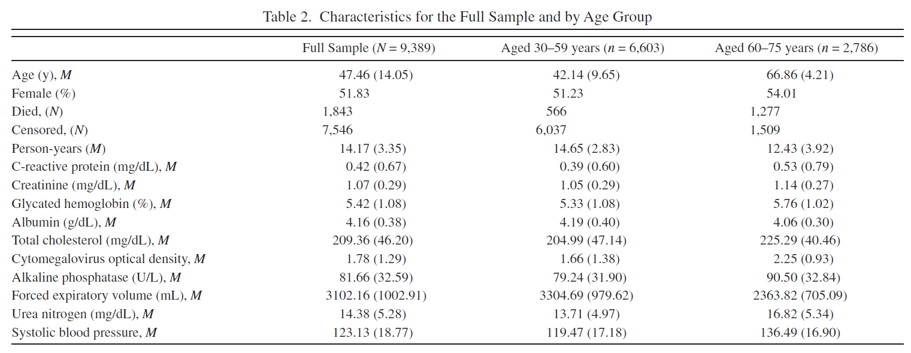 |
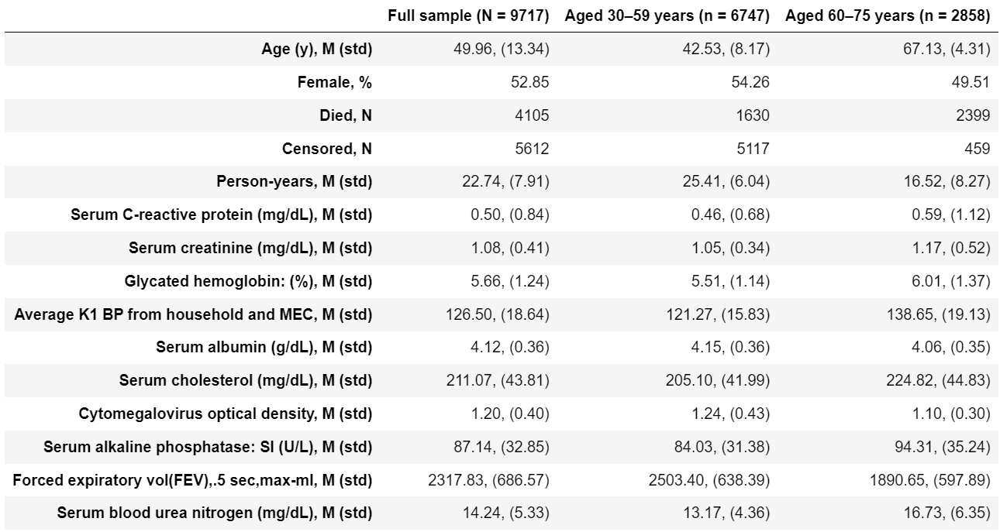 |
4. Bilogical Age estimates#
4.1 Principal component analysis (PCA)#
First PCA component was used as Biological Age estimator. Note that authors used some undefined method to investigate the significance of variable’s influence on the first principal component and chose 7 statistically significant variables based on that to test Biological Age models with limited number of Biomarkers. I tested variable’s influence on the first PCA by Pearson’s correlation - and all 10 biomarkers significantly correlated with the first PCA so I did not reproduce their limites models.
4.2 Multiple linear regression (MLR)#
MLR was used to predict Chronological Age from the 10 Biomarkers. Resulting MLR predictions are Biological Age estimations.
4.3 Klemera and Doubal’s method (KDM)#

The formulas (2), (3), (4) and (5) from the paper implemented. Note, that in formulas: \(x_j\) is a set of biomarker values, \(k_j\) is a slope, \(q_j\) is intercept, \(s_j\) i a root mean squared error of a biomarker regressed on chronological age, \(m\) is number of biomarkers used.
Table 3 is reproduced.
Original Table 3 |
Reproduced Table 3 (only models with 10 biomarkers) |
|---|---|
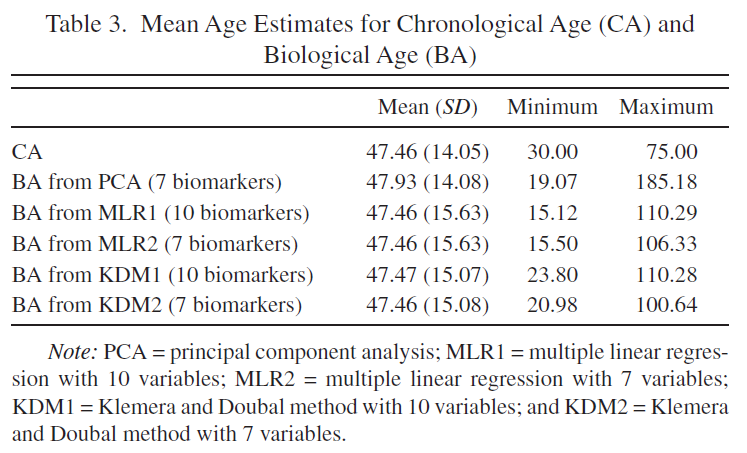 |
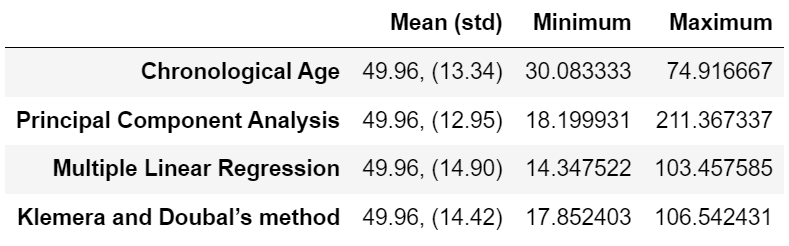 |
5.Bilogical Age estimates and mortality#
Mortality risk is cumulative hazard function at the last timestamp (cph.predict_cumulative_hazard(Cox_train)) or inverse of survival function (1-cph.predict_survival_function(Cox_train)). These approaches to define mortality risk are identical and result in identical ROC-AUC curves and ROC-AUC scores.
6. ROC-AUC stratified by age groups#
Tables 4, 5 are reproduced.
Original Table 4 |
Reproduced Table 4 |
|---|---|
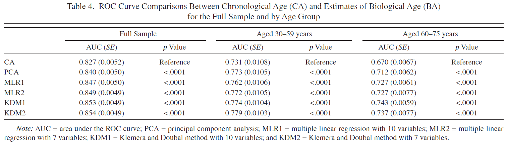 |
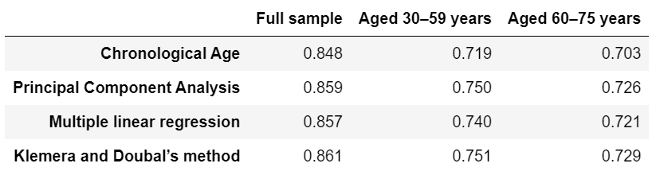 |
Original Table 5 |
Reproduced Table 5 |
|---|---|
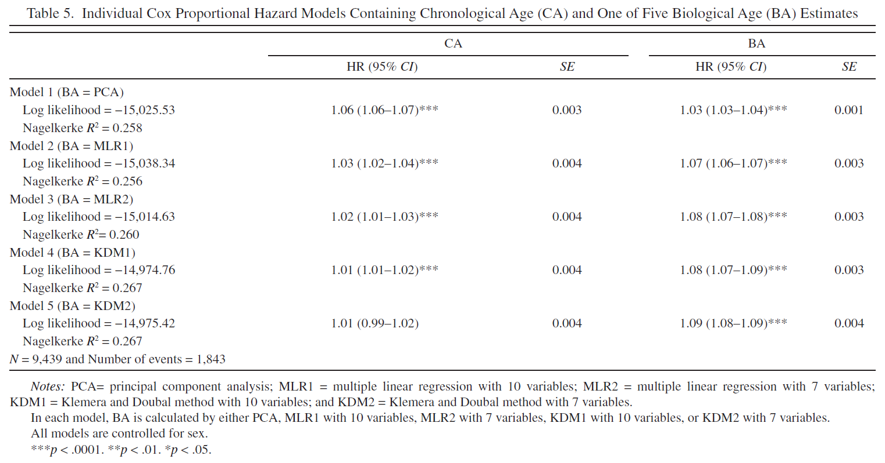 |
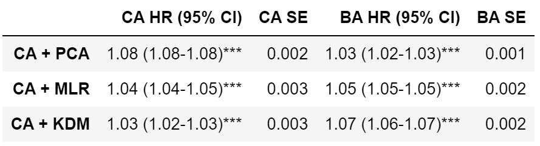 |
Results#
I wasn’t able to create the same sample dataset from NHANES III as it was generated by authors. My dataset is a bit bigger than authors (Table 2, N=9717 VS N=9389) and I also suppose I may have used not the exact variables authors used because in the article they do not mention the exact variable names whereas in NHANES III some measurments (such as blood pressure) were taken several times and therefore have more than one corresponding variable.
Due to slightly different samples, I have slightly different Pearson’s correlations between variables and chronological ages (Table 1). Some of the correlations are not statistically significant in my sample but statistically significant in authors’ sample (although these are correlations with very small absolute values of Pearson’s R). The chosen authors’ top 10 biomarkers correlated with Chronological Age (CA) are almost fully intersect with mine top 10 biomarkers.
I implemented Principal component analysis (PCA), Multiple linear regression (MLR) and Klemera and Doubal’s method (KDM) Biological Age (BA) models. I have got very similar ranges of predicted Biological Ages to the ones that authors obtained (Table 3) with the PCA predicting the largest range of BA values and KDM predicting the smallest range of BA values.
I calculated ROC-AUC scores for the Cox proportional hazard models with PCA BA, MLP BA, KDM BA, CA, CA + PCA BA, CA + MLP BA, CA + KDM BA. Among the models based only on BA, ROC-AUC score varied significantly, from 0.796 (PCA BA), to 0.852 (MLP BA) and 0.861 (KDM BA) (for women). Among models based on CA (CA, CA + PCA BA, CA + MLP BA, CA + KDM BA), ROC-AUC scores didn’t vary significantly (Table 4).
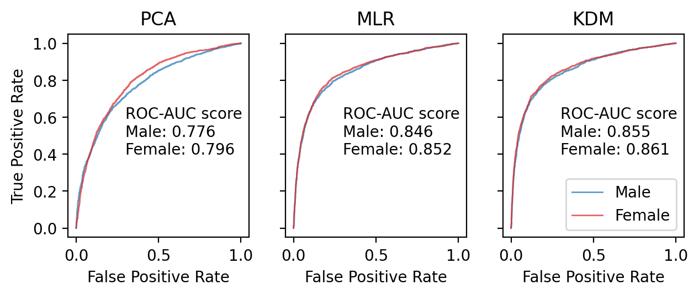
The models trained separately for men and for women (or with additional Sex variable) perform better than models trained without gender stratification. Models trained on full sample preform better than models trained on subsamples stratified by Age groups (Table 4).
I calculated Hazard Ratios (HR) for CA and BA in CA + PCA BA, CA + MLP BA, CA + KDM BA Cox proportional hazard models (Table 5). The more complex the model the less HR of CA and the greater the HR of BA.
Conclusions#
The results of the paper are reproducible. I was able to get similar numbers and ROC-AUC scores although they are not exactly the same. I would like to see more precise description of the used variables in the paper, and ideally the final dataset should published by authors to increase reproducibility. Also, authors omit deatils abouth the preprocessing, statistical tests used and some details of implementation which should not have been taken so lightly by the publishers and reviewers.